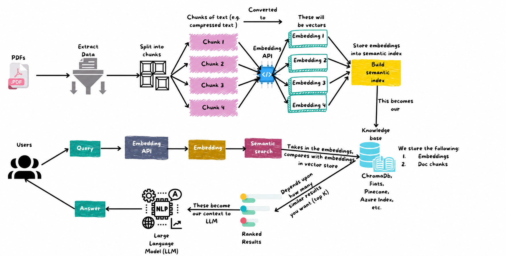

The Real Problem RAG Solves
Most people first meet AI through a chat window. You ask a question, it answers in clean English, and it feels like the model knows everything. That feeling is dangerous.
An LLM is excellent at generating language. It is not automatically connected to your company documents, your production logs, your product catalog, your latest pricing, your current incidents, or your customer policies. When it does not have the right information, it still tries to be helpful. That is where trouble starts.
Imagine this support conversation on an e-commerce site:
A customer asks, "Can I return this phone after opening the box?" The AI answers, "Yes, opened electronics are returnable for 30 days." It sounds confident. It sounds helpful. But your real policy says opened electronics are only eligible for replacement if defective. Now the customer has a screenshot, support has an escalation, and your team has a trust problem.
That is a hallucination: the model creates an answer that looks real but is not grounded in your actual source of truth. In AI demos, hallucination is embarrassing. In production AI systems, hallucination creates refunds, wrong runbook steps, compliance risk, security mistakes, and broken customer trust.
RAG solves the context problem. Instead of asking the LLM to answer from memory, you first retrieve relevant facts from trusted sources, then ask the LLM to answer using those facts.
What Is RAG?
RAG means Retrieval-Augmented Generation. The name is heavy, but each word explains one part of the system.
Before the AI writes an answer, the system searches trusted knowledge and gives the best results to the model as context.
R = Retrieval
Retrieval means finding the right information before the AI answers. The system searches your trusted sources: docs, databases, APIs, tickets, product catalog, logs, runbooks, or policies.
This is the "open the book first" part of RAG. Instead of making the LLM guess, retrieval brings evidence into the conversation.
A = Augmented
Augmented means the LLM is improved with extra context. The model is still the same model, but now it receives useful facts that were not in its original training data.
This is why RAG works well for private or latest data. You do not need to retrain the LLM every time a policy, price, incident, or product spec changes.
G = Generation
Generation is the final answer written by the LLM. The model takes the user's question plus retrieved context and turns it into a helpful response.
The LLM is responsible for explaining, summarizing, formatting, and reasoning, but the answer should be grounded in the retrieved material.
So the full meaning is: retrieve relevant knowledge, augment the LLM with that knowledge, then generate a grounded answer.
How RAG Is Related to LLMs
RAG is not a replacement for an LLM. RAG is a pattern that makes an LLM more useful in real applications. The LLM still writes the answer, but RAG controls what context the LLM sees before it writes.
Think of an LLM as a brilliant intern on day one. It can write clearly, summarize quickly, and reason through a problem. But it does not know your internal systems yet. RAG gives that intern the exact runbook, support policy, product spec, or incident report before asking for the final answer.
| Without RAG | With RAG |
|---|---|
| The LLM answers from training data and conversation history. | The LLM answers from retrieved company or product context. |
| The model may not know latest policies, prices, incidents, or inventory. | The model can use freshly indexed documents, APIs, and databases. |
| The answer may sound confident even when the model is guessing. | The answer can be grounded with source citations and confidence signals. |
| Good for general reasoning, writing, explanation, and summarization. | Good for AI apps that must answer from specific, trusted knowledge. |
In a RAG system, the LLM is usually the final reasoning and writing layer. Retrieval gives it the raw evidence. The prompt tells it how to use that evidence. The LLM then produces the answer in a form a user can understand.
This is why RAG is one of the most common patterns behind practical AI applications: customer support bots, internal knowledge assistants, product Q&A, codebase assistants, SRE debug copilots, legal search, healthcare assistants, and AI search experiences.
How Hallucinations Create Real Issues
Hallucination is not just "AI made a typo". It happens when a model fills missing context with a likely-sounding answer. The answer often has polished grammar, confident tone, and enough truth around the edges to feel believable.
| AI Scenario | Hallucinated Answer | Real-World Damage |
|---|---|---|
| Customer support | "Your refund is approved under our 30-day policy." | Wrong promise, escalation, revenue leakage, angry customer. |
| SRE assistant | "Restart the database primary to clear the lock." | Potential outage if the actual runbook requires failover checks first. |
| Security helper | "This IAM policy is least privilege." | Over-permissive access reaches production. |
| E-commerce Q&A | "This charger supports your laptop model." | Wrong purchase, return, bad product experience. |
| Compliance assistant | "This control is not required for your audit." | Audit evidence gap and last-minute remediation work. |
RAG does not make hallucinations impossible, but it reduces the main cause: missing or stale context. It gives the model a grounded workspace and tells it, "Use this information. If the answer is not here, say you do not know."
If the answer must be accurate, current, private, or auditable, do not rely on the LLM's memory alone. Use retrieval, citations, guardrails, and evaluation.
Basic Architecture: The Human Flow
Let us walk through RAG like a story, not a textbook diagram.
A user opens your AI support assistant and asks:
"My payment succeeded, but the order is still pending. What should I do?"
1. User Asks a Question
The user asks naturally. They do not know your database schema, service names, queue names, or support macros. They just describe the problem.
2. System Searches Relevant Documents
The system searches payment docs, support FAQs, order-state runbooks, recent incidents, and known error patterns. It looks for meaning, not just exact keywords.
3. Top Results Are Sent to the LLM
The retriever sends the best chunks to the model: "payment captured but order pending", "order reconciliation job", "manual retry policy", and "customer-facing response template".
4. LLM Answers Using That Context
The LLM writes a helpful answer using the retrieved material. It can explain what happened, what the customer should expect, and when support needs to intervene.
User question:
"My payment succeeded, but the order is still pending. What should I do?"
Retrieved context:
1. Payment service runbook: captured payments can wait for order reconciliation
2. Support FAQ: tell customer to wait 15 minutes before escalation
3. Incident note: retry job failed last week due to queue lag
4. Policy: never ask customer to pay again if payment is captured
Grounded answer:
"Your payment appears captured, so please do not pay again. Orders can remain
pending for up to 15 minutes while our reconciliation job updates the status.
If it is still pending after that, support should check the order retry queue."That is the heart of RAG: question -> retrieve trusted context -> generate grounded answer.
Core Components of a RAG System
A RAG application has five core blocks. Once you understand these blocks, every RAG architecture becomes easier to reason about.
1. Data Source
This is the knowledge your AI should use. It can be structured or unstructured.
- PDFs, policy files, SOPs, manuals, onboarding docs
- Databases such as PostgreSQL, MySQL, MongoDB, or product catalogs
- APIs for CRM, billing, inventory, logistics, alerts, or incidents
- Docs from Confluence, Notion, Google Drive, GitHub, Jira, Zendesk
RAG quality starts here. If your source data is stale, duplicated, or contradictory, your AI will inherit that confusion.
2. Embeddings
Embeddings convert text into vectors. A vector is a list of numbers that captures meaning.
Beginner version: embeddings make meaning-based search possible. "Forgot password", "cannot login", and "reset my access" can be found together even though the words are different.
"forgot password" -> [0.18, -0.42, 0.77, ...]
"reset login" -> [0.20, -0.39, 0.74, ...]
"track shipment" -> [-0.61, 0.12, 0.08, ...]3. Vector Database
A vector database stores embeddings and finds similar vectors quickly. Common options:
- Pinecone: managed service, fastest path for teams that want less operations work
- Weaviate: strong search features, open-source and managed options
- Qdrant: fast, practical, good self-hosted option for Kubernetes teams
- pgvector: useful when PostgreSQL is already your operational comfort zone
4. Retriever
The retriever decides what context the LLM receives. It embeds the user's query, searches the vector database, applies filters, and returns the best chunks.
This is one of the most important parts of RAG. If retrieval is wrong, the final answer will probably be wrong too.
5. LLM
The LLM generates the final response. Examples include OpenAI models, Claude, Gemini, and self-hosted Llama-based models.
The model should be instructed to answer from context, cite sources when available, and admit when context is insufficient.
Chunking: The Hidden Skill Behind Good RAG
Chunking means splitting a large document into smaller pieces before creating embeddings. It sounds like a small implementation detail, but in RAG it is one of the biggest quality levers.
Why? Because the retriever does not usually send an entire 80-page PDF to the LLM. It sends a few chunks. If your chunks are clean, focused, and complete, the LLM gets useful context. If your chunks are messy, incomplete, or too broad, the LLM gets confusing evidence and may generate a weak or wrong answer.
If a return policy is split so one chunk says "opened electronics are not returnable" and another chunk separately says "exceptions apply for defective products", the retriever may return only the first chunk. The AI then gives an incomplete answer. Chunking decides what facts stay together.
What Makes a Good Chunk?
A good chunk should be small enough to retrieve precisely, but large enough to carry the full meaning. The chunk should answer one clear idea, procedure, product, policy, or incident point.
| Chunk Quality | What It Looks Like | RAG Result |
|---|---|---|
| Too small | One sentence, missing surrounding rules or examples. | Retriever finds fragments. LLM lacks full context. |
| Too large | Several pages mixed together: refund, shipping, warranty, escalation. | Retriever returns noisy context. LLM may focus on the wrong part. |
| Just right | One complete section: "Opened electronics return policy" with exceptions. | Retriever returns focused evidence. LLM answers accurately. |
Common Chunking Methods
1. Fixed-Size Chunking
Split text every fixed number of characters or tokens, such as 500 tokens per chunk.
Best for: quick prototypes, plain text, homogeneous documents.
Weakness: it can cut a sentence, table, warning, or procedure in the middle.
2. Fixed-Size With Overlap
Split text into fixed-size chunks but repeat a small part of the previous chunk in the next chunk.
Example: 800-token chunks with 100-token overlap.
Why it helps: if a key idea crosses a boundary, overlap reduces the chance of losing context.
3. Paragraph-Based Chunking
Split by paragraphs instead of arbitrary token count.
Best for: articles, support docs, policy pages, and documentation written in clean paragraphs.
Weakness: some paragraphs are too short or too long, so you may still need merging or splitting rules.
4. Heading-Based Chunking
Split by headings such as H2/H3 sections in Markdown, HTML, Confluence, or Notion.
Best for: structured documentation, runbooks, API docs, security policies.
Why it works: headings usually represent human meaning. A section titled "Rollback Procedure" should stay together.
5. Semantic Chunking
Use meaning changes to decide chunk boundaries. The system groups sentences that discuss the same idea and splits when the topic changes.
Best for: long knowledge articles, mixed-topic docs, research content.
Tradeoff: better quality, but more complex and slower during ingestion.
6. Domain-Aware Chunking
Split based on the type of data, not just text length.
Examples: one product per chunk, one runbook step group per chunk, one incident timeline per chunk, one API endpoint per chunk.
Best for: production systems where accuracy matters more than quick setup.
Chunking Examples by Data Type
| Data Type | Recommended Chunking | Why |
|---|---|---|
| Support articles | Heading-based chunks with policy title and URL metadata. | Users ask about one policy or procedure at a time. |
| E-commerce products | One product or product variant per chunk. | Keep title, specs, price, reviews summary, compatibility, and return notes together. |
| Runbooks | Procedure-based chunks with warnings included. | The LLM must see prerequisites, commands, rollback steps, and danger notes together. |
| Incident reports | Chunk by summary, timeline, impact, root cause, and action items. | SRE questions usually target a specific part of the incident. |
| API docs | One endpoint per chunk, including request, response, auth, and error codes. | Developers need complete endpoint context, not random paragraphs. |
| Logs | Chunk by request ID, trace ID, time window, incident, or service boundary. | Random log-line chunks lose causal context. |
Chunk Metadata Matters
A chunk should not only contain text. It should also contain metadata. Metadata helps filtering, citations, debugging, and access control.
{
"chunk_id": "return-policy-004",
"source": "support_center",
"document_title": "Electronics Return Policy",
"section": "Opened Box Exceptions",
"url": "https://help.example.com/electronics-return-policy",
"updated_at": "2026-04-22",
"tenant": "public",
"language": "en",
"text": "Opened electronics are not returnable unless defective..."
}Metadata lets you answer questions like: "Only search public support docs", "Only search documents updated this year", "Only search this customer's tenant", or "Show the source URL in the final answer".
Embeddings and Chunking Strategy
Embeddings and chunking are tightly connected. The embedding model does not understand your original document structure unless you preserve it in the text you embed. If you feed the model weak chunks, you get weak vectors. If you feed it clear, complete chunks, the vector database can retrieve better matches.
What Should You Embed?
Do not blindly embed raw text exactly as it appears. In many RAG systems, you should create a retrieval text: a clean text representation designed for search.
# Raw product data
name: "TrailMax Pro"
category: "Hiking Shoes"
features: ["waterproof", "rubber grip", "ankle support"]
reviews_summary: "Good for rain and wet trails. Not warm enough for heavy snow."
# Retrieval text sent to embedding model
"Product: TrailMax Pro. Category: Hiking Shoes.
Features: waterproof, rubber grip, ankle support.
Customer reviews say it works well for rain and wet trails,
but it is not warm enough for heavy snow."This matters because embedding models work on the text you give them. If your product record only embeds "TrailMax Pro", the model does not know it is waterproof, useful for hiking, or weak for heavy snow. Rich text produces a more useful vector.
Embedding Methods in RAG
| Method | How It Works | Best For |
|---|---|---|
| Single-vector per chunk | Create one embedding for each chunk. | Most RAG systems. Simple, fast, and effective. |
| Multi-vector per document | Create embeddings for multiple sections of the same document. | Long docs where different sections answer different questions. |
| Title + body embedding | Include title, heading, and body text in the embedded representation. | Documentation, policies, product pages, support articles. |
| Question-style embeddings | Generate likely questions for a chunk and embed those too. | FAQ bots and support search where users ask predictable questions. |
| Separate embeddings by field | Embed product description, reviews, specs, and FAQs separately. | E-commerce and search systems where fields carry different meaning. |
Chunk Size: Practical Starting Points
There is no universal perfect chunk size. Start with a reasonable default, test real queries, then tune.
| Use Case | Starting Chunk Size | Overlap | Notes |
|---|---|---|---|
| Support docs | 400-800 tokens | 50-100 tokens | Keep policy exceptions with the main rule. |
| Runbooks | 600-1,200 tokens | 100-150 tokens | Keep warnings, commands, verification, and rollback near each other. |
| Product catalog | One product record | Usually none | Use metadata for category, brand, price, stock, region. |
| API docs | One endpoint | Small overlap | Include auth, request, response, and common errors. |
| Incident reports | Section-based | Optional | Use metadata for service, severity, date, owner, tags. |
Common Embedding and Chunking Mistakes
- Embedding entire PDFs as one vector: the vector becomes too broad and retrieval becomes vague.
- Embedding tiny fragments: the retriever finds text that matches but lacks enough information to answer.
- Losing headings: a paragraph means more when it carries its parent title and section name.
- Ignoring metadata: without metadata, filtering by tenant, product category, document freshness, or permission becomes hard.
- Mixing unrelated topics: a chunk containing refund policy, login troubleshooting, and shipping rules creates a noisy embedding.
- Not re-indexing after chunking changes: if you change chunking strategy, old embeddings no longer represent your new retrieval design.
Design chunks around the answer you want the AI to give. If a human needs the title, warning, exception, or table to answer correctly, keep that information in the chunk or attach it as metadata.
Vector Database: Why It Matters in RAG
A vector database is the search index that lets RAG find meaning, not just matching words. It stores embeddings for your chunks and quickly returns the chunks closest to the user's question.
Traditional databases are still useful for exact filters such as tenant, product category, region, or permissions. The vector database adds semantic search on top. For example, a user may ask "comfortable shoes for warehouse work" even though your product copy says "anti-fatigue sole, arch support, slip-resistant outsole". Vector search can connect those meanings.
What It Stores
A vector DB stores the embedding, the original chunk or a pointer to it, and metadata such as source URL, document title, tenant, category, language, permissions, and updated date.
Why It Is Important
It controls what evidence reaches the LLM. If retrieval is weak, the LLM receives weak context. If retrieval is strong, the LLM can produce a grounded and useful answer.
Common Choices
Pinecone, Weaviate, Qdrant, Milvus, pgvector, Elasticsearch, and OpenSearch can all be used depending on scale, budget, team skill, and operational preference.
Features to Care About
Look for metadata filtering, hybrid search, score thresholds, backups, replication, observability, and access-control support. These matter more in production than benchmark numbers alone.
User question:
"How do I return a damaged phone?"
Nearest chunks from vector database:
1. "Damaged electronics replacement policy" score: 0.89
2. "Opened-box electronics return restrictions" score: 0.82
3. "How support should handle DOA devices" score: 0.79The main rule: use the vector database to retrieve the best evidence, then let the LLM explain that evidence clearly. RAG fails when the vector database retrieves the wrong chunks, stale chunks, or chunks the user should not be allowed to see.
The RAG Pipeline
RAG has two major flows: ingestion and answering.

The diagram above shows RAG in two connected paths. The top path is the ingestion path: PDFs or documents are parsed, useful data is extracted, text is split into chunks, and each chunk is converted into an embedding through an embedding API. Those embeddings are stored in a semantic index or knowledge base such as ChromaDB, Pinecone, FAISS, Azure AI Search, or another vector store.
The bottom path is the user-query path. A user asks a question, the question is also converted into an embedding, and semantic search compares that query embedding with stored document embeddings. The most similar chunks are returned as ranked results. Those ranked results become the context sent to the LLM, and the LLM generates the final answer for the user.
| Flow | What Happens | AI Example |
|---|---|---|
| Ingestion | Collect data, clean it, split into chunks, create embeddings, store vectors. | Index product docs, support tickets, return policy, and product reviews. |
| Retrieval | Embed the user question and search the vector database for relevant chunks. | Find the refund policy and similar support cases for a customer question. |
| Generation | Send question plus retrieved context to the LLM and generate the final answer. | Answer with policy-aware wording and source links. |
# Simplified RAG flow
question = "Can I return opened electronics?"
query_vector = embedding_model.embed(question)
chunks = vector_db.search(query_vector, top_k=5, filters={"source": "support_docs"})
context = "\n\n".join(chunk.text for chunk in chunks)
prompt = f"""
You are a support AI. Answer using only the context below.
If the context is missing the answer, say you do not have enough information.
Cite the policy name when possible.
Context:
{context}
Question:
{question}
"""
answer = llm.generate(prompt)When to Use RAG
Use RAG when a plain LLM is too disconnected from the real world. If the AI needs facts that live outside the model, RAG is usually the right architecture.
Use RAG When You Need Latest Data
Model training data is not your live production state. Use RAG when answers depend on current docs, pricing, inventory, policies, incidents, tickets, or API responses.
Real example: an e-commerce AI assistant asks, "Is this phone available in Mumbai, and can it be delivered tomorrow?" A normal LLM cannot know live inventory, warehouse location, delivery SLA, or current offers. RAG can retrieve inventory API data, logistics rules, and product availability before the LLM answers.
Why the LLM needs RAG: the LLM is good at explaining the answer, but the live facts must come from your systems.
Use RAG When You Have Private Data
Your internal runbooks, architecture docs, customer contracts, Slack decisions, Jira tickets, and audit evidence are not inside a public LLM. Retrieval brings that private context into the answer safely when access control is implemented.
Real example: a new engineer asks, "How do we deploy the payments service to production?" A general LLM can explain CI/CD, but it does not know your GitHub workflow, approval process, rollback command, PagerDuty owner, or database migration rule.
Why the LLM needs RAG: the model can write a clear deployment explanation only after retrieval gives it your actual internal process.
Use RAG to Reduce Hallucination
If an answer must be grounded in facts, policies, logs, or source documents, RAG is the right starting pattern. It gives the model evidence instead of asking it to guess.
Real example: a support AI asks whether opened electronics can be returned. Without RAG, the LLM may invent a friendly refund policy. With RAG, it retrieves the exact return policy, exceptions, warranty language, and escalation rule.
Why the LLM needs RAG: the model's writing ability is useful, but policy accuracy must come from trusted documents.
Use RAG When You Need Citations
For legal, compliance, customer support, and engineering operations, citations matter. A useful AI answer should say where the answer came from.
Real example: an audit assistant answers, "Which ISO 27001 control requires access reviews?" The answer must point to the internal control mapping, evidence document, ticket, or policy section.
Why the LLM needs RAG: the LLM can summarize the control, but RAG provides the source trail that humans can verify.
Use RAG for AI Search Experiences
Search users do not always know the right keywords. They describe intent: "gift for a 10-year-old who likes space", "warm shoes for snow trekking", or "why did checkout latency spike after deploy?"
Real example: an AI shopping assistant retrieves products, reviews, size guides, return policy, and stock before the LLM recommends options in plain language.
Why the LLM needs RAG: the model understands language, but the catalog, reviews, and availability must come from retrieval.
Use RAG for DevOps and SRE Assistants
Incident response depends on live context: logs, metrics, recent deploys, alerts, ownership, and past postmortems. A general LLM cannot know what happened in your cluster five minutes ago.
Real example: an SRE asks, "Why is checkout-api returning 500s after the last release?" RAG can retrieve Grafana links, Loki logs, deployment history, runbooks, and similar incidents before the LLM summarizes likely causes.
Why the LLM needs RAG: the LLM is useful for correlation and explanation, but retrieval provides the operational evidence.
When Not to Use RAG
Do not add RAG just because it is popular. If your task is creative writing, simple summarization of already-provided text, generic Q&A, or extremely low-latency autocomplete, RAG may add unnecessary cost and complexity.
Benefits of RAG
Types of RAG Architecture
| Type | How It Works | Example |
|---|---|---|
| Naive RAG | Search top chunks and send them to the LLM. | FAQ bot for 200 support articles. |
| Advanced RAG | Uses query rewriting, metadata filters, better chunking, and re-ranking. | Internal AI assistant that avoids stale runbooks. |
| Hybrid RAG | Combines BM25 keyword search with vector search. | E-commerce product Q&A where SKU and brand exact matches matter. |
| Graph RAG | Uses relationships between entities, documents, services, owners, and incidents. | SRE assistant linking service, dashboard, alert, owner, deploy, and postmortem. |
| Agentic RAG | An AI agent decides what to retrieve, which tools to call, and whether more context is needed. | Debug assistant that checks logs, then searches runbooks, then inspects recent deploys. |
| Multi-modal RAG | Retrieves from text, screenshots, diagrams, transcripts, or product images. | AI support for device setup using manuals, images, and troubleshooting videos. |
Real-World AI Applications
Customer Support Bots
RAG lets support AI answer from your latest help center, policies, product docs, and historical tickets. The bot can cite the policy instead of inventing one.
Internal Knowledge Search
Employees ask "how do we rotate payment service keys?" and get an answer from runbooks, GitHub docs, Jira tickets, and incident notes.
E-commerce Product Q&A
Customers ask "which laptop is good for video editing under my budget?" The AI retrieves product specs, reviews, stock, offers, and compatibility notes before answering.
Log and Debug Assistants
For DevOps and SRE, RAG can pull similar incidents, runbook steps, deployment history, log patterns, and Grafana dashboard links into one AI explanation.
AI Codebase Assistants
Developers can ask where a feature is implemented, why a test fails, or how an internal library should be used. Retrieval gives the model relevant files instead of making it guess.
Compliance and Audit AI
Teams can search controls, evidence, policies, exceptions, and audit reports. Citations are critical because "the AI said so" is not audit evidence.
Limitations of RAG
Retrieval Can Return Wrong Context
If the retriever finds a similar but wrong document, the model may produce a wrong answer. Relevance testing is mandatory.
Chunking Matters a Lot
Bad chunking can split a policy from its exception, a runbook step from its warning, or a product spec from its compatibility note.
Latency Increases
RAG adds embedding, search, optional re-ranking, and a larger LLM prompt. Better answers usually cost more time.
Not Perfect Accuracy
RAG can still fail because of stale data, bad prompts, missing permissions, weak retrieval, or model misinterpretation. High-risk flows still need human review.
Advanced Topics
Hybrid Search: BM25 + Vector
BM25 is good for exact words like SKUs, service names, error codes, and customer IDs. Vector search is good for meaning. Combining both improves retrieval for real users.
final_score = (0.65 * vector_score) + (0.35 * bm25_score)Re-ranking
Retrieve 30 to 100 candidates quickly, then use a stronger model to sort the best 5. This improves precision when wrong context is expensive.
candidates = retriever.search(query, limit=50)
top_context = reranker.rank(query, candidates)[:5]Chunking Strategies
Use heading-based chunks for documentation, product-level chunks for catalogs, procedure-level chunks for runbooks, and incident-level chunks for postmortems. Add overlap when context crosses boundaries.
Caching
Cache common embeddings, retrieval results, and safe final answers. Caching reduces token cost and improves latency, but never cache private answers across users or tenants.
DevOps and SRE Production Concerns
RAG is AI, but production RAG is also infrastructure. If your RAG assistant becomes part of support, incident response, or product search, it needs operational maturity.
| Concern | What to Watch | Practical Control |
|---|---|---|
| Cost | Vector DB storage, embedding calls, LLM input tokens, output tokens, re-ranking. | Top-k limits, caching, smaller chunks, cheaper embedding models, token budgets. |
| Latency | Embedding time, vector search time, re-ranking time, LLM generation time. | Trace each stage, cache hot queries, avoid unnecessary re-ranking for simple questions. |
| Scaling | Bulk ingestion, vector index growth, memory pressure, tenant isolation. | Batch embeddings, async indexing, sharding, read replicas, rate limits. |
| Observability | Bad retrieval, token spikes, slow responses, low confidence answers. | OpenTelemetry traces, Grafana dashboards, logs for retrieved doc IDs and scores. |
# Example OpenTelemetry span attributes for a RAG request
rag.query.id = "req-8f12"
rag.retrieval.top_k = 5
rag.retrieval.min_score = 0.74
rag.vector_db.latency_ms = 31
rag.llm.input_tokens = 4200
rag.llm.output_tokens = 380
rag.total.latency_ms = 1840
rag.answer.has_citations = trueSecurity and Governance
RAG often touches private documents and customer data. Treat it like a production data system, not just an AI experiment.
- Access control: users should only retrieve documents they are allowed to read.
- Tenant filtering: customer A should never retrieve customer B's documents.
- PII handling: redact, mask, or avoid indexing sensitive fields unless needed.
- Prompt injection defense: retrieved documents are data, not instructions. The LLM must not obey hidden instructions inside a document.
- Auditability: log user question, retrieved source IDs, model version, token usage, and answer ID.
Getting Started Roadmap
Week 1: Build the Smallest Useful RAG
Pick one AI use case and 20 to 50 trusted documents. Build ingestion, embeddings, vector search, and a simple grounded prompt.
Week 2: Test Real Questions
Collect real questions from support, engineering, or product users. Tune chunking, filters, top-k, and prompts. Add citations.
Month 1: Make It Production Ready
Add authentication, authorization filters, caching, logging, traces, rate limits, cost dashboards, and offline evaluation.
Quick Checklist
- Start with a real AI problem where wrong answers hurt.
- Choose trusted data sources before choosing tools.
- Use embeddings for meaning-based search.
- Store vectors in Pinecone, Weaviate, Qdrant, or pgvector.
- Keep answers grounded with clear prompts and citations.
- Evaluate retrieval quality with real questions.
- Monitor cost, latency, retrieval scores, token usage, and user feedback.
- Add Grafana dashboards, traces, and logs before broad rollout.
Conclusion
RAG matters because it turns a generic AI model into an AI application that understands your business. It gives the model the missing context: your policies, products, incidents, logs, runbooks, support tickets, architecture docs, and APIs.
The most important thing to remember is simple: LLMs generate; RAG grounds. The LLM still writes the answer, but retrieval gives it the facts it should use. That is how you reduce hallucination, improve trust, and build AI systems that are useful outside a demo.
Good AI products are not built by asking the model to know everything. They are built by giving the model the right context at the right time.